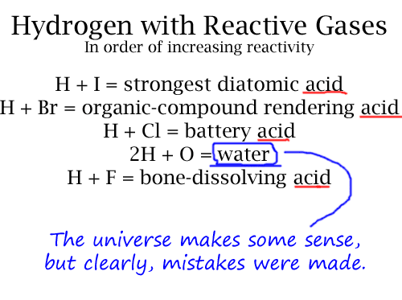

Comic JK 59
When I Feel Like It
⇤
<
?
>
⇥

⇤
<
?
>
⇥
Forum
.
RSS
.
Digg
.
Facebook
.
Reddit
.
Twitter
.
Stumbleupon
All of them are halogens except oxygen. That probably has something to do with it. H2O is water being neutral. HI= H+I 2H+O=H2O >Water is neutral because our definition of neutral is pure water. The pH scale is >centered around water. The author is knowingly making a subjective-viewpoint joke, >that viewpoint being that of organic life on earth. In the universe as a whole, >water is one of the most universal solvents (that we know of). Though that is only >true if we are limiting the discussion to condensed matter: stellar plasma dissolves >things fairly quickly.... So, as long as theres two hydrogens, it safe? Thou canst not compare O with F, Cl, Br or I. Try sulphur. > Electronegative gases. They are comparable in many reactions. >>F, Cl, Br, and I are halogenic...oxygen is not...we are comparing apples and oranges here...perhaps the author was not looking at their periodic table when they wrote this? or perhaps they were not reliant on chemists reading their post? >>>I'm pretty sure the author knew about those properties, and expects readers to as well... H2O is a weak acid... >technically it is amphoteric >>Yeah, it's a weak base/acid/water/thing! But it's 2H... Like sulfuric X) But it's OH... like sodium hydroxide X) Well, H2O DOES wear most everything doen over time, soo.... Maybe it is an acid, and we're just evolved to be dependent on it? >On a planet where sulfuric acid is the basis of life, H2O is a bone-dissolving base. I'm pretty sure battery acid is around 35% H2SO4, not HCl. ^^^ Yup! We have a winner! I don't see the problem, it ranges from neutral to acidic. Remember, even slightly acidic water is considered drinking water. If it were truly basic, it would have been "WTF?" worthy. An acid is defined by its concentration in H+ ions and OH ions. An acid will donate one of its H to a water molecule, increasing the amount of H3O in the solution. Water ionizes to the baseline we call neutral. boats n' hoes Hydrogen = hydroxylic acid, bitches. I like the kind of acid that comes on tiny pieces of cardboard.